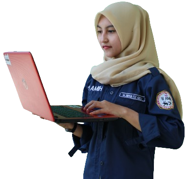

Hallo all I am
Lisna Siti Nurmilah
"Kenali Cintai Kemudian Nikahi"
Jangan mencoba mendekati bahkan mengenali jika hanya bermaksud untuk melukai!!!

Saya hanyalah seorang remaja yang berumur 21 tahun. Remaja yang sedang mencari jati diri dan value kehidupan. Tidak ada keistimewaan ataupun keahlian yang ada pada diri saya. Ditengah kejamnya dunia saya hanya bersyukur dengan memiliki keluarga yang utuh dan selalu dikelilingi orang orang baik dan menyayangi saya tanpa pamrih. 3 Kata yang menggambarkan diriku. Mau tau?
Saya adalah orang yang tidak lepas dari overthingking disetiap harinya. Disaat sendiri ataupun sedang bersama orang lain, saya cenderung berpikir berlebihan. Apalagi disaat akan memutuskan suatu hal dan ketika melakukan kesalahan.
Ternyata terdapat dampak positif Dari cara saya yang selalu berpikir overthingking. Dengan berpikir seperti itu saya bisa berprilaku konsisten dan berkomitmen dengan apa yang sudah saya putuskan atau sudah saya ambil. Karena saya merasa sudah memikirkannya matang-matang. Sebagaimana kalian tahu orang overthingking itu selalu memikirkan suatu hal dari akarnya hingga mendapatkan solusi terbaik. Sehingga keputusannya cenderung selalu benar dan tidak mengecewakan.
Saya bukanlah orang yang suka ribet dan bertele-tele. Karena saya cenderung lebih suka sendiri dibandingkan dengan berkerumun atau bergabung dengan orang lain. Saya tidak bisa cepat menyesuaikan dengan sesuatu yang baru atau orang yang baru. Saya tidak bisa memulai sebelum orang lain yang duluan memulai. Contohnya : Saya tidak bisa bertanya dan mengajak ngobrol orang baru duluan. Maka dari itu saya suka orang yang simple dan to the point.
Internastional Women University
PT Kynema Systrans Multimedia
SDN Pasirkaliki
Saya tidak banyak memiliki skills, ini hanyalah sebuah hobi yang saya tekuni untuk bersenang senang dan pengalaman. Saya kuliah di jurusan yang tidak sesuai dengan fashion saya. Maka dari itu lebih sulit untuk mencerna materi-materinya, Maka dari itu, untuk menghilangkan stres saya, saya melakukan beberapa kegiatan yang menjadikan itu sebagai keahlian sampingan saya. Berikut daftarnya :
Silahkan hubungi saya untuk informasi lebih lanjut. Terimakasih